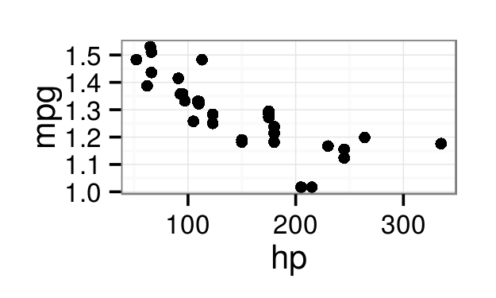
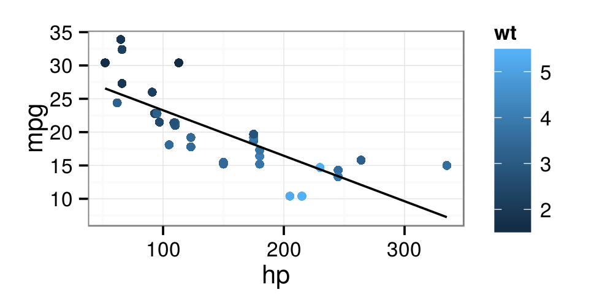
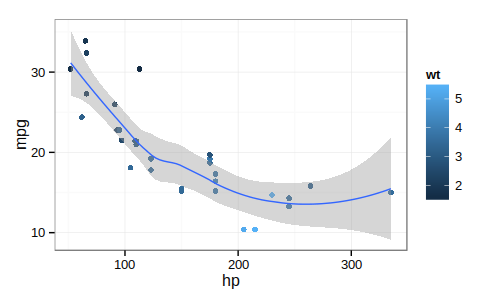
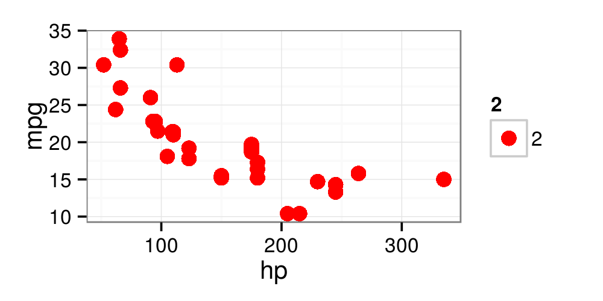
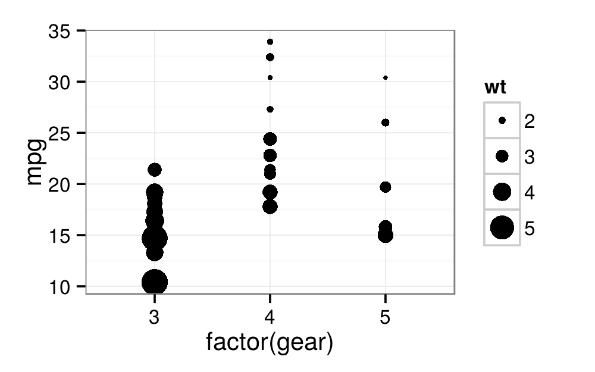
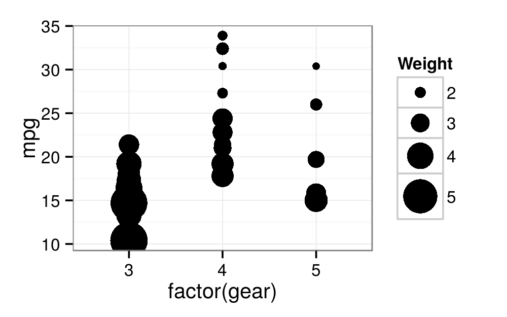

Introduciton to R Graphics with ggplot2
Table of Contents
1 Introduction
1.1 Class Files And Administrative Details labsetup
- User name: dataclass
- Password: dataclass
- Copy Rgraphics folder from shared drive to your desktop
- Class Structure and Organization
- Ask questions at any time. Really!
- Collaboration is encouraged
- This is your class! Special requests are encouraged
- This is an intermediate R course
- Assumes working knowledge of R
- Relatively fast-paced
- Focus is on
ggplot2graphics–other packages will not be covered
1.2 Starting A The End
My goal: by the end of the workshop you will be able to reproduce this graphic from the Economist:
1.3 Why ggplot2?
- Advantages of ggplot2
- Consistent underlying
grammar of graphics(Wilkinson, 2005) - Plot specification at a high level of abstraction
- Very flexible
- Theme system for polishing plot appearance
- Active maintenance and development–getting better all the time
- Many users, active mailing list
- Consistent underlying
- Things you cannot do With ggplot2
- 3-dimensional graphics
- Graph-theory type graphs (nodes/edges layout)
1.4 What Is The Grammar Of Graphics?
- The basic idea: independently specify plot building blocks
- Anatomy of a plot:
- data
- aesthetic mapping
- geometric object
- statistical transformations
- scales
- coordinate system
- position adjustments
- faceting
1.5 The structure of a ggplot
The ggplot() function is used to initialize the basic graph structure, then we add to it. The structure of a ggplot looks like this:
ggplot(data = <default data set>, aes(x = <default x axis variable>, y = <default y axis variable>, ... <other default aesthetic mappings>), ... <other plot defaults>) + geom_<geom type>(aes(size = <size variable for this geom>, ... <other aesthetic mappings>), data = <data for this point geom>, stat = <statistic string or function>, position = <position string or function>, color = <"fixed color specification">, <other arguments, possibly passed to the _stat_ function) + scale_<aesthetic>_<type>(name = <"scale label">, breaks = <where to put tick marks>, labels = <labels for tick marks>, ... <other options for the scale>) + theme(plot.background = element_rect(fill = "gray"), ... <other theme elements>)
- Don't be afraid, you will understand this by the end of the workshop!
- The basic idea is that you specify different parts of the plot, and add them together using the "+" operator
1.6 Example data I: mtcars
print(head(mtcars, 4))
mpg Miles/(US) gallon cyl Number of cylinders disp Displacement (cu.in.) hp Gross horsepower drat Rear axle ratio wt Weight (lb/1000) qsec 1/4 mile time vs V/S am Transmission (0 = automatic, 1 = manual) gear Number of forward gears carb Number of carburetors
1.7 ggplot2 VS Base Graphics
- Compared to base graphics,
ggplot2- is more verbose for simple / canned graphics
- is less verbose for complex / custom graphics
- does not have methods (data should always be in a
data.frame) - uses a different system for adding plot elements
1.8 ggplot2 VS Base Graphics
Base graphics VS ggplot for simple graphs:
- Base histogram BMCOL
hist(mtcars$mpg)
ggplot2histogram BMCOLggplot(mtcars, aes(x = mpg)) + geom_histogram(binwidth = 5)

- Base wins! BMCOL
1.9 ggplot2 VS Base Graphics
Base graphics VS ggplot for complex graphs:
- Base colored scatter plot BMCOL
par(mar = c(4,4,.1,.1)) plot(mpg ~ hp, data=subset(mtcars, am==1), xlim=c(50, 450),ylim=c(5, 40)) points(mpg ~ hp, col="red", data=subset(mtcars, am==0)) legend(350, 40, c("1", "0"), title="am", col=c("black", "red"), pch=c(1, 1))

ggplot2colored scatter plot BMCOLggplot(mtcars, aes(x=hp, y=mpg, color=factor(am)))+ geom_point() #

ggplot2wins! BMCOL
2 Geometric Objects And Aesthetics
2.1 Aesthetic Mapping
- In ggplot land aesthetic means "something you can see"
- Examples include:
- position (i.e., on the x and y axes)
- color ("outside" color)
- fill ("inside" color)
- shape (of points)
- linetype
- size
- Each type of geom accepts only a subset of all aesthetics–refer to the geom help pages to see what mappings each geom accepts
- Aesthetic mappings are set with the
aes()function
2.2 Geometic Objects (geom)
- Geometric objects are the actual marks we put on a plot
- Examples include:
- points (
geom_point, for scatter plots, dot plots, etc) - lines (
geom_line, for time series, trend lines, etc) - boxplot (
geom_boxplot, for, well, boxplots!)
- points (
- A plot must have at least one geom; there is no upper limit
- Add a geom to a plot using the
+operator - You can get a list of available geometric objects:
geoms <- help.search("geom_", package = "ggplot2") geoms$matches[1:4, 1:2]
2.3 Points (Scatterplot)
- Now that we know about geometric objects and aesthetic mapping, we can make a ggplot
geom_pointrequires mappings for x and y, all others are optional BMCOLggplot(mtcars, aes(x = hp, y = mpg)) + geom_point()

- Remember that
ggplot()only sets defaults–we can override these BMCOLggplot(mtcars, aes(x = hp, y = mpg)) + geom_point(aes(y=log10(mpg)))

2.4 Lines (Prediction Line)
- A plot constructed with
ggplotcan have more than one geom - Our
hpvsmpgplot could use a regression line:
mtcars$pred.mpg <- predict(lm(mpg ~ hp, data = mtcars)) p1 <- ggplot(mtcars, aes(x = hp, y = mpg)) p1 + geom_point(aes(color = wt)) + geom_line(aes(y = pred.mpg))

2.5 Smoothers
- Not all geometric objects are simple shapes–the smooth geom includes a line and a ribbon
p2 <- ggplot(mtcars, aes(x = hp, y = mpg)) p2 + geom_point(aes(color = wt)) + geom_smooth()

2.6 Text (Label Points)
- Each
geomaccepts a particualar set of mappings–for examplegeom_text()accepts alabelsmapping
p2 + geom_point(aes(color = wt)) + geom_smooth() + geom_text(aes(label=rownames(mtcars)), size=2)

2.7 Aesthetic Mapping VS Assignment
- Note that variables are mapped to aesthetics with the
aes()function, while fixed aesthetics are set outside the aes() call - This sometimes leads to confusion, as in this example:
ggplot(mtcars, aes(x = hp, y = mpg)) + geom_point(aes(size = 2),# incorrect! 2 is not a variable color="red") # this is fine -- all points red

2.8 Mapping Variables To Other Aesthetics
- Other aesthetics are mapped in the same way as x and y in the previous example
ggplot(mtcars, aes(x = hp, y = mpg)) + geom_point(aes(color=wt, shape = factor(am)))

2.9 Exercise I
- Create a scatter plot with displacement on the
xaxis and horse power on the y axis - Color the points in the previous plot blue
- Color the points in the previous plot according to miles per gallon
2.10 Exercise I prototype prototype
# ex1.1 (p.ex1 <- ggplot(mtcars, aes(x = disp, y = hp)) + geom_point()) # ex1.2 p.ex1 + geom_point(color = "blue") # ex1.3 p.ex1 + geom_point(aes(color = mpg))
3 Statistical Transformations
3.1 Statistical Transformations
- Some plot types (such as scatterplots) do not require transformations–each point is plotted at x and y coordinates equal to the original value
- Other plots, such as boxplots, histograms, prediction lines etc. require statistical transformations
- For a boxplot the y values must be transformed to the median and 1.5(IQR)
- For a smoother smother the y values must be transformed into predicted values
- Each
geomhas a default statistic, but these can be changed - For example, the default statistic for
geom_barisstat_bin
args(geom_bar) # ?stat_bin
3.2 Setting Statistical Transformation Arguments
- Arguments to
stat_functions are passed throughgeom_functions - Slightly annoying because in order to change it you have to first determine which stat the geom uses, then determine the arguments to that stat
- Here is the default histogram of miles per gallon BMCOL
ggplot(mtcars, aes(x = mpg)) + geom_bar()

- Here we change the bin width BMCOL
ggplot(mtcars, aes(x = mpg)) + geom_bar(stat = "bin", binwidth=4)

3.3 Changing The Statistical Transformation
- Sometimes the default statistical transformation is not what you need
- Often the case with pre-summarized data
(mtc.sum <- aggregate(mtcars["mpg"], mtcars["gear"], FUN=mean))
- Bar plot with summarized data BMCOL
> ggplot(mtc.sum, aes(x=gear, y=mpg)) + geom_bar() Mapping a variable to y and also using stat="bin". Error in pmin(y, 0) : object 'y' not found . - Bar plot with stat="identity" BMCOL
ggplot(mtc.sum, aes(x=gear, y=mpg)) + geom_bar(stat="identity")

3.4 Exercise II
- Create boxplots of mpg by gear
- Overlay points on top of the box plots
- Create a scatter plot of weight vs. horsepower
- Overlay a linear regression line on top of the scatter plot
3.5 Exercise II Prototype prototype
#Ex2.1 (p <- ggplot(mtcars, aes(x = factor(gear), y = mpg)) + geom_boxplot()) #Ex2.2 p + geom_point() #Ex2.3 (p <- ggplot(mtcars, aes(x = wt, y = hp)) + geom_point()) #Ex2.4 p + geom_smooth(method = "lm")
4 Scales
4.1 Scales: Controlling Aesthetic Mapping
- In
ggplot2scales include- position
- color and fill
- size
- shape
- line type
- Modified with
scale_<aesthetic>_<type>
4.2 Common Scale Arguments
- name: the first argument gives the axis or legend title
- limits: the minimum and maximum of the scale
- breaks: the points along the scale where labels should appear
- labels: the labels that appear at each break
4.3 Scale Modification Examples
p6 <- ggplot(mtcars, aes(x = factor(gear), y = mpg)) p6 + geom_point(aes(color = wt))

4.4 Scale breaks and labels
p7 <- p6 + geom_point(aes(color = wt)) + scale_x_discrete("Number of Gears", breaks = c("3", "4", "5"), labels = c("Three", "Four", "Five")) p7 + scale_color_continuous("Weight", breaks = with(mtcars, c(min(wt), median(wt), max(wt))), labels = c("Light", "Medium", "Heavy"))

4.5 Scale breaks and labels
p7 + scale_color_continuous("Weight", breaks = with(mtcars, c(min(wt), median(wt), max(wt))), labels = c("Light", "Medium", "Heavy"), low = "black", high = "gray80")

4.6 Using different color scales
p7 + scale_color_gradient2("Weight", breaks = with(mtcars, c(min(wt), median(wt), max(wt))), labels = c("Light", "Medium", "Heavy"), low = "blue", mid = "black", high = "red", midpoint = median(mtcars$wt))

4.7 Scale Modification Examples
p8 <- ggplot(mtcars, aes(x = factor(gear), y = mpg)) p8 + geom_point(aes(size = wt))

4.8 Scale range
p8 + geom_point(aes(size = wt)) + scale_size_continuous("Weight", range = c(2, 10))

4.9 Available Scales
- Partial combination matrix of available scales
| Scale | Types | Examples |
|---|---|---|
| scalecolor_ | identity | scalefillcontinuous |
| scalefill_ | manual | scalecolordiscrete |
| scalesize_ | continuous | scalesizemanual |
| discrete | scalesizediscrete | |
| scaleshape_ | discrete | scaleshapediscrete |
| scalelinetype_ | identity | scaleshapemanual |
| manual | scalelinetypediscrete | |
| scalex_ | continuous | scalexcontinuous |
| scaley_ | discrete | scaleydiscrete |
| reverse | scalexlog | |
| log | scaleyreverse | |
| date | scalexdate | |
| datetime | scaleydatetime |
4.10 Exercise III
- Experiment with color, size, and shape aesthetics / scales
- What happens when you map more than one aesthetic to a variable?
- Which aesthetics are good for continuous variables? Which work better for discrete variables?
5 Faceting
5.1 Faceting
- Faceting is
ggplot2parlance for small multiples - The idea is to create separate graphs for subsets of data
ggplot2offers two functions for creating small multiples:facet_wrap(): define subsets as the levels of a single grouping variablefacet_grid(): define subsets as the crossing of two grouping variables
- Facilitates comparison among plots, not just of geoms within a plot
5.2 Example Data II: Housing prices
housing <- read.csv("dataSets/landdata-states.csv") head(housing[1:5])
(Data from https:www.lincolninst.edu/subcenters/land-values/land-prices-by-state.asp)
5.3 What is the trend in housing prices?
- Start by using a technique we already know–map State to color
p8 <- ggplot(housing, aes(x = Date, y = Home.Value)) p8 + geom_line(aes(color = State))

- There are two problems here–there are too many states to distinguish each one by color, and the lines obscure one another
5.4 Faceting to the rescue
- We can remedy the deficiencies of the previous plot by faceting by state rather than mapping state to color
p8 + geom_line() + facet_wrap(~State, ncol = 10)

- There is also a
facet_grid()function for faceting in two dimensions
6 Themes
6.1 Themes
- The
ggplot2theme system handles non-data plot elements such as- Axis labels
- Plot background
- Facet label backround
- Legend appearance
- Two built-in themes:
theme_gray()(default)theme_bw()- More available on the wiki:
6.2 Overriding theme defaults
- Specific theme elements can be overridden using
theme() - Example:
p7 + theme(plot.background = element_rect( fill = "blue", colour = "gray40"))

- You can see available options by printing
theme_gray()ortheme_bw()
6.3 Creating and saving new themes
- You can create new themes, as in the following example:
theme_new <- theme_bw() + theme(text=element_text(size = 12, family = ""), axis.text.x = element_text(colour = "red"), panel.background = element_rect(fill = "pink")) p7 + theme_new

7 The #1 FAQ
7.1 Map Aesthetic To Different Columns
The most frequently asked question goes something like this: I have two variables in my data.frame, and I'd like to plot them as separate points, with different color depending on which variable it is. How do I do that?
- Wrong BMCOL
ggplot(mtcars, aes(x=wt)) + geom_point(aes(y=disp), color="red") + geom_point(aes(y=hp), color="blue") #

- Right BMCOL
library(reshape2) mtc.m <- melt(mtcars, measure.vars=c("disp", "hp")) ggplot(mtc.m, aes(x=wt, y=value, color=variable)) + geom_point()

8 Putting It All Together
8.1 Challenge: Recreate This Economist Graph
- Data
The data is available in the dataSets/EconomistData.csv file. Read it in with dat <- read.csv("dataSets/EconomistData.csv")
Original sources are
http:www.transparency.org/content/download/64476/1031428 http:hdrstats.undp.org/en/indicators/display_cf_xls_indicator.cfm?indicator_id=103106&lang=en
- Graph source:
8.2 Challenge data
- Load the data:
dat <- read.csv("dataSets/EconomistData.csv")
- Recreate this graph:

8.3 Challenge Solution prototype
Create basic scatter plot
pc1 <- ggplot(dat, aes(x = CPI, y = HDI, color = Region)) (pc1 <- pc1 + geom_point(shape = 1)) #

8.4 Challenge Solution prototype
Add labels
label.these <- c("Congo", "Sudan", "Afghanistan", "Greece", "China", "India", "Rwanda", "Spain", "France", "United States", "Japan", "Norway", "Singapore") (pc2 <- pc1 + geom_text(aes(label = Country), color = "black", size = 3, hjust = 1.1, data = dat[dat$Country %in% label.these, ]))

8.5 Challenge Solution prototype
Add smoothing line
(pc3 <- pc2 + geom_smooth(aes(group = 1), method = "lm", color = "black", formula = y~ poly(x, 2), se = FALSE)) #

8.6 Challenge Solution prototype
Finishing touches
(pc4 <- pc3 + theme_bw() + scale_x_continuous("Corruption Perceptions Index, 2011\n(10 = least corrupt)") + scale_y_continuous("Human Development Index, 2011\n(1 = best)") + theme(legend.position = "top", legend.direction = "horizontal"))

9 Wrap-up
9.1 Help Us Make This Workshop Even Better!
- Please take a moment to fill out a very short feedback form
- These workshops exist for you – tell us what you need!
- http:tinyurl.com/R-graphics-feedback
9.2 Additional resources
- ggplot2 resources
- Mailing list: http:groups.google.com/group/ggplot2
- Wiki: https:github.com/hadley/ggplot2/wiki
- Website: http:had.co.nz/ggplot2/
- StackOverflow: http:stackoverflow.com/questions/tagged/ggplot
- IQSS resources
- Research technology consulting: http:projects.iq.harvard.edu/rtc
- Workshops: http:projects.iq.harvard.edu/rtc/filter_by/workshops